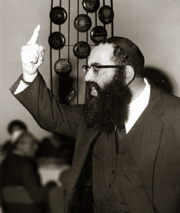

Man on a Mission
Forty-three years ago, in Av 5731/1971, R’ Yitzchok Dovid Groner a”h, shliach of the Rebbe to Australia, was in 770. Before returning home, he was called to the Rebbe who gave him 26 ten dollar bills. Each bill was designated for another person in a different location, with a different mission attached to it. * When he finally returned home to Australia, he quickly arranged a series of lectures and farbrengens and sent follow-up letters to the people he met on his shlichus. Then he prepared a detailed report for the Rebbe in which he told of his accomplishments, day by day, hour by hour. * Beis Moshiach presents this special report from a t’shura given at the Telsner-Goldschmidt wedding.

The Rebbe asked him where he would be around 20 Av and he said in Eretz Yisroel. The Rebbe said, “I have a brother who is buried in Teveria [that is what the Rebbe said, not Tzfas].” The Rebbe cried and then continued, “Go there and see if the gravestone needs fixing, and place a note there.”
The day after he left New York, when he was in London, he heard the news that his first grandson, R’ Mordechai Telsner, was born. R’ Groner did not return to New York for the bris, because he knew that the Rebbe would not be pleased if he stopped in the middle of his shlichus.
After finishing his long trip, completing all the assignments he had from the Rebbe, he wrote a report to the Rebbe about carrying out his mission.
It should be noted that we do not have the first part of the report, which describes his trip between 12 and 18 Av.
It is interesting that one of the ten dollar bills was given to him by the Rebbe as his participation in buying a gift for R’ Groner’s wife, who did not go on this trip.
•
Erev Shabbos Ki Seitzei, 20 Elul 5731
To the Rebbe shlita,
As I wrote in the telegram on the day I returned here, the visit to Tehran, Bombay, Calcutta, and Singapore were, boruch Hashem, very successful, and because I was boruch Hashem busy the entire time, I was unable to finish the report I started to write in Eretz Yisroel, and here too, boruch Hashem, there was so much work. I am now finishing the report from Eretz Yisroel.
MOVING VISIT AT THE REBBE’S BROTHER’S GRAVE
On Tuesday, 19 Av, the farbrengen in Yeshivas Toras Emes in Yerushalayim was very geshmak. That day, I visited my relative, R’ Zelig Slonim, and I gave him a ten dollar bill from the Rebbe [for the farbrengen].
The night of 20 Av, there was a farbrengen in the Tzemach Tzedek shul in the Old City and, boruch Hashem, there was a nice crowd. I reviewed the sichos and a little of the maamer. A few of the young men spoke excitedly about the BaCH (Orach Chaim 238) quoted in the sicha (see Sichos Kodesh 5731 p. 395 - about being up at night to learn starting from after the 9th of Av until the following Shavuos).
On Wednesday morning, 20 Av, I went together with two talmidim from Toras Emes, Moshe Perman, and Menachem Hershkop, to Tzfas. I went by taxi directly to Tzfas and we went to the cemetery. I immediately found the Rebbe’s brother’s grave. We stood there for some time and said chapters of T’hillim and I also wrote a note [and placed it on the grave]. I wrote a request for the Rebbe’s health, that he lead the Chabad community and Klal Yisroel until the coming of the Righteous Redeemer, speedily. And a special request that the decree of Mihu Yehudi be annulled and that all the Rebbe’s inyanim be fulfilled as the Rebbe wishes.
The talmidim took pictures. The gravestone and grave are, boruch Hashem, fine. Just a little bit of the color on the letters had come off and when I returned, I told R’ [Efraim] Wolf and he said he would make sure that it would be fixed right away. This was because in Tzfas I did not find anyone in charge, but surely it was arranged already. However, in general, the gravestone was standing in its place without any problem. I just want to point out that on the gravestone it says that 12 Iyar is the date of death and I was told it was 13. Surely this was relayed to the Rebbe already.
Then we visited other holy sites in Tzfas, Miron, Teveria and at all the graves we recited chapter 70 and requested that the Rebbe lead the Chabad community and Klal Yisroel until the coming of the Righteous Redeemer in good health, without aggravation, and that they arouse mercy that the decree of Mihu Yehudi be annulled.
We returned at night, straight to Kfar Chabad, in order to hear the Rebbe’s farbrengen from New York. A nice crowd came, boruch Hashem, to hear the farbrengen in the yeshiva. Then I returned to Yerushalayim [with Anash who had come there to hear the farbrengen].
EFFORTS TO MEET WITH PM GOLDA MEIR
At eleven in the morning, I had a meeting with Mr. …, international chairman of Keren HaYesod (United Israel Appeal). He welcomed me graciously because he received telegrams from Melbourne and Sydney about my participation in their work. I asked him to arrange a meeting for me with the Prime Minister [Golda Meir]. He said it was very hard as he too had not met with her since she had been elected because she was busy, but he promised to try.
I explained that it would be good for people in Australia regarding the appeal, and he agreed [he told me that he visited 770 a few years ago; he himself is from Cleveland and he greatly enjoyed davening there, apparently he did not enter the holy [i.e. have yechidus] but he told me that he is an admirer of Chabad etc.]. I also spoke with one of his assistants who told me that he would also try to arrange a meeting, although it is difficult.
Sunday morning, the assistant called me and said that I should believe him when he says he did all he could to arrange a meeting, but he was unsuccessful since she is very busy. He spoke with Herzog, secretaries etc. and apologized, and stressed that he had really tried but unfortunately, was unable to.
I should mention that on the way to Tzfas [about 7-8] soldiers hitched rides in our taxi, with our consent, and all put on t’fillin.
LOADED MEETING AT THE JEWISH AGENCY
Friday morning, I had a meeting with … in his office at the Jewish Agency. I know him from … and he was also at my daughter’s wedding. I told him that I had come on my own account because of the issues of Mihu Yehudi and the Viennese conversions since we know he is the one that arranges all aliya and absorption, as he had already come to Melbourne, and was causing outright gentiles to receive certificates that they are Jews, and this is causing confusion and a chillul Hashem.
At first, he wanted to deny it all by saying it was lashon ha’ra, until I showed him clear proof that this is what they are doing in Vienna and they are receiving certificates without converting. Although I spoke sharply, I did not speak with chutzpa and we remained friends. I told him that my friend, R’ Wolpo, chief rabbi of Rishon L’Tziyon, had a number of cases where girls came to him with certificates and after making inquiries he found out that they are gentiles who received ID’s [and he could call him].
Then he said, what can we do, and why is Lubavitch getting involved. Since Lubavitch does nothing, they should be quiet; and if they feel the need to get involved they ought to shout about the law of return and conversion which is not halachic. He also agreed that the ministers should leave the government but he has no influence over that.
I told him: That you say Lubavitch does nothing, first of all, you need to use your “seat” [i.e. you should threaten to resign]. He asked: And what will be? I said that I would sit and hope, with Hashem’s help, to arrange everything properly according to Halacha. He looked at me and asked what I would do. I explained that first we need to know in general what is going on inside the Jewish Agency and then we can arrange everything in Vienna, unlike what they are presently doing. From what he said, it seemed he knows everything and is doing nothing. He told me that the matter is indeed problematic for they come and say they are Jews.
He also said: Why do you call …. Canaanite slaves, when they did so much for Torah and its teachings? I told him what the Rebbe said in the Chaf Av farbrengen about the sick person etc. [see Sichos Kodesh 5731, vol. 2, p. 433 – where the Rebbe compares those that defend their inactivity about Mihu Yehudi by pointing to the good that they do, with a sick person who shows his healthy limb to the doctor for fear of being told that he is sick].
I pointed at King George Street where the Jewish Agency is located; I said that in a while we won’t know who is a Jew and who is a goy out of those walking this street. He did not respond. I was there for about an hour.
While I was in Kfar Chabad and also when speaking to those involved in the matter, I recommended that they arrange a complete file of all those cases that they know about in the world where outright gentiles received certificates stating they are Jews. Here too, a rav arranged kiddushin for a girl who showed him her Israeli ID which states she is a Jew and afterward, he found out that she is a gentile. [This should be shown to the government for then they will not be able to maintain that all is well, the way it was written in the newspapers … after the 20 Av farbrengen in the name of someone from the Interior Ministry, that in Vienna all is in order].
A TERRIFIC FARBRENGEN
On Shabbos, Parshas Eikev, Shabbos Mevarchim Elul, I davened in the Tzemach Tzedek shul where there was a chassan, Sefardi, and a large crowd [many guests came]. I spoke at the Kiddush in Hebrew about Mihu Yehudi, and gave over some of the sichos.
Parenthetically, the following Monday night, I returned from Tel Aviv to Yerushalayim. Sitting next to me was … a lecturer at Bar Ilan University who was in the Tzemach Tzedek shul on Shabbos. He told me that he was impressed by what he heard.
The farbrengen at Tzemach Tzedek lasted several hours and was a very geshmake farbrengen. Parts of the sichos of 20 Av were reviewed and there was also talk about Mihu Yehudi. They say that in Yerushalayim it has been a long time since there was such a farbrengen.
On Sunday I went to Rishon L’Tziyon to be in the yeshiva there. Before that, I went to R’ Wolpo to ask him to arrange a list of those girls who came to him with certificates stating they are Jews while he found the opposite is so. He said he would send it to R’ Wolf. After that, I went to the yeshiva. The menahel, R’ Mordechai Goldberg, explained that now was vacation, but talmidim, teachers and counselors came anyway. R’ Raskin was also there. I reviewed the sichos in Hebrew and also spoke about Mihu Yehudi. I emphasized to the talmidim who are youngsters about strengthening learning Torah, Nigleh and Chassidus. I was there for some time, we sang Chassidishe niggunim, we danced a Chassidishe dance, we davened Mincha and Maariv, and I went to Kfar Chabad to farbreng with the people there.
The farbrengen in Kfar Chabad lasted a few hours [we began at about 8:30 and finished after 11). A large crowd came, boruch Hashem, to the new beis midrash, along with Rav Shneur Zalman Garelik [rav of Kfar Chabad] who was present the entire time. I gave over sichos [from Parshas Pinchas] and the maamer on Eicha [and spoke mainly about Mihu Yehudi], and in general, there was an awakening about Mihu Yehudi to come up with ideas about what to do to annul the decree. I suggested arranging a file with all the cases they heard about. One of the people said that a rav told him that he also had instances in this regard, so they cannot deny the situation. There was a suggestion that they say T’hillim Thursday night, Erev Rosh Chodesh Elul, to annul the decree.
Monday morning, I visited R’ Garelik in his home and then I went to Tel Aviv with R’ Efraim Wolf to visit the American ambassador. He received me nicely and recalled in positive terms the shluchim who had come to visit him. I spoke about their giving visas without a hassle to those who just came from Russia and wanted to go to the Rebbe. Both R’ Wolf and I spoke with the one in charge of this downstairs.
Then I went to the home of Mr. [Yehuda] Paldi [who did a lot on the issue of Mihu Yehudi and was the chairman of the Shleimus Ha’Am committee]. He was excited by the visit, especially that the Rebbe sent a shliach to him and also the ten dollar bill [and also what the Rebbe said to convey]. I saw in him extraordinary positivity and excitement. He explained to me everything he is doing to avert the decree and said he is writing it all to the Rebbe. You can see that he lives the issue, that he takes action, and his very being is invested in this matter.
From there I went to visit the rabbinate office in Tel Aviv about a personal matter for one of my mekuravim in Melbourne. I visited R’ Dovid Tzvi Zilberstein whom I know and also went in regarding this matter to R’ Goren, the chief rabbi, whom I know from when he was here and I also visited him in Eretz Yisroel. I gave him yashar ko’ach for the speech at the gathering in the Mizrachi for Mihu Yehudi where he spoke about annulling the law (because) his brother-in-law, R’ Sheor Yashuv Cohen asked me in Yerushalayim whether the Rebbe knows what his brother-in-law, R’ Goren spoke about. R’ Goren received me graciously.
The same day, I visited the home of R’ Yedidya Frankel of Tel Aviv, because he is to officiate the kiddushin for my friend’s daughter … of Melbourne and he asked me to visit the rav with him to find out the details. R’ Frankel told me that he visited the Rebbe and he also showed me the letters that the Rebbe sent him. I spoke to him about Mihu Yehudi.
Tuesday morning I attended a bris by the son of R’ … of Yerushalayim. He gave me the honor of having me relay sichos of the Rebbe and I spoke in Hebrew about what the Rebbe spoke about on Parshas Pinchas and also about Mihu Yehudi.
At night, I traveled to Hertzliya to the wedding of my friend’s daughter … I spoke in the middle of the meal and also emphasized the problem of Mihu Yehudi.
THE CHIEF RABBI WAS WAITING IN THE AIRPORT IN TEHRAN
Wednesday night I left Eretz Yisroel for Tehran. Although I arrived late at night, the chief rabbi, R’ Yedidya Shofet was there and Chacham Uriel and two people from the community, because R’ Wolf sent them a telegram about me.
I was in Tehran on Thursday, Friday, and Shabbos Parshas R’ei, Rosh Chodesh Elul.
During the time I was there I spoke with the deputy to the Israeli ambassador, Mr. … in his office. The ambassador himself was in Eretz Yisroel. I spoke to him about Mihu Yehudi and told him that he and his colleagues need to look into this serious problem. I also visited the Jewish Agency as the shluchim had done. The main person there is Mr. … and I spoke to him at length about sending boys from Tehran [especially the religious ones] to religious institutions; otherwise, they become corrupted. As Chacham Yedidya told me that a few went to Eretz Yisroel who were a little religious and they returned the opposite.
I visited Mr. …, the deputy chairman of the community. He was very friendly to me. I gave him a ten dollar bill from the Rebbe with the explanation that the Rebbe told me. He understood the sanctity of the matter. I gave it to him because he is one of the askanim of the community.
I spoke with the principal of the Alliance Israelite school, Mr. … They showed me the only mikva that Rav … z”l built [I recommended some corrections], and I also visited the Jewish hospital.
On Shabbos evening Chacham Yedidya and I davened in the home of a mourner whose father died, a distinguished man. On Shabbos morning they daven at six. A large crowd came, about 500 men and women, bli ayin ha’ra, kein yirbu. They asked me to speak and the Chacham said that I should speak in Hebrew and he would translate to their language. I spoke about learning Torah, kashrus, family purity, etc.
We davened Mincha in another shul and after the davening Chacham Yedidya gave me the honor of speaking. I met many of the youth both in shul and outside and I spoke to them about t’fillin. They all knew I am from Chabad.
IN THE JEWISH COMMUNITY IN BOMBAY
Motzaei Shabbos I went to Bombay. I arrived Sunday morning and a few of the distinguished balabatim were already waiting because they had sent telegrams from Eretz Yisroel saying I was coming.
At night, I davened Mincha and Maariv in the Knesset Eliyahu shul and they invited me to early morning Slichos.
After the davening, I was invited to eat at the Jewish club in honor of the new Israeli consul. All the most distinguished men and women came. The meal was kosher because they have a shochet. I emphasized a proper chinuch and Chabad activities and that the Rebbe sent me just to visit their community.
In the morning I visited the … school where many of the students are Jewish, relatively speaking, although the number of Jews is diminishing because they are making aliya, but there are about eighty. I spoke to the principal and she is very interested in the Jewish students being given chinuch. In that school was Mr. … and two girls who traveled under the auspices of … to Yerushalayim for two years, on condition that they return to Bombay and be teachers. I spoke to them at length and promised them material from Tzeirei Agudas Chabad and Merkos L’Inyanei Chinuch.
I addressed the students, visited all the classes, and asked those students who were already bar mitzva who did not put on t’fillin, to come and put on t’fillin. I put t’fillin on with all of them, about twelve students. I asked whether they have their own t’fillin, and only two said they had. The others cannot buy any due to poverty. The teacher said that he brought fourteen pairs of t’fillin with him. I gave him $150 and bought ten pairs from him and gave it to each of the students as a gift on condition that they be used every day.
There were a few students who put t’fillin on at home or in shul. I was in that school for a long time. Afterward, I visited the … school where there are not many Jewish students since they left. There too, the gentile principal called upon all the Jewish boys and girls as well as the Jewish teachers and I put t’fillin on with all of those who are bar mitzva. I addressed them and explained the necessity of learning Torah and doing mitzvos. The Jewish teacher from the … school also came with me and I asked them to allow him to come and teach occasionally, and to arrange for lessons outside of class time.
As per the instruction of the head of the community, in the evening, the builder came for instructions to fix the mikva which is under the Knesset Eliyahu shul.
I visited the most important shul of the Bene Israel, the “Magen Chassidim.” I spoke with the director and the secretary also told me that on 2 Elul there were about 150 people for Slichos. They showed me their mikva.
TORAH IN CALCUTTA
On Monday night I went to Calcutta. I arrived and a car was waiting for me that brought me to Mr. … There they arranged for the very distinguished askan, Mr. … to take me to the schools and the shuls. In the past, there were 2000 Jews, but now 310 remain. So the Jewish schools emptied out. I first visited the Meyers school where there are only twenty Jewish students and I spoke to them all. Those who are already bar mitzva go to shul every morning and are paid to complete the minyan and so they had already put on t’fillin. I asked a few of them to come in the evening to the Beit E-l shul in order to arrange some kind of organization for them.
Then I visited the … school, which is beautiful and has a nice dormitory. In the girls’ school there were about twenty-five of them. They told me some t’fillos and chapters of T’hillim and I actually cried to see that even in Calcutta words of Torah are heard. I addressed them at length about Judaism. They said that it is hard to arrange a youth group because there is fear of going outside in the city, because unfortunately, there are killings … every day, but … they try.
I spoke to the Jewish studies teacher, Mrs … and also promised to send books from here. I spoke at length with the principal about looking out for the Jewish students. I visited all the classes and they gave me gifts and I took names of students in order to set up pen pals with students in Beth Rivka.
At night, I davened in the Magen Dovid shul, a very beautiful building. I spoke with a few of the youth about arranging some youth organization. At the Beth E-l shul I saw the mikva. I gave Mr. … $10 because he is the askan here. And I also gave $10 to Mr. … in Bombay, and for all of them I wrote the Rebbe’s address so they can send their thanks.
SPECIAL VISIT TO SINGAPORE
On Wednesday I went to Singapore. At night, I called the … families. They have four sons and want to send the two older ones to Melbourne. I saw them. There are only 500 Jews there, 130 of them from Eretz Yisroel, most of who have no connection with Judaism.
I spoke with Mr. … one of the distinguished people about ancient s’farim; they said there aren’t any. They have many sifrei Torah, some of which are pasul. In the morning I visited their shul and checked the sifrei Torah and some are fine. I asked Mr. … to send a few here and he said I had to write a letter to the community and he would make an effort.
In Tehran too, I saw s’farim in the community and I asked the vice chairman, Mr. … but he said that he cannot give them to me because it is communal money. In Bombay they said they had many s’farim but someone came and took nearly all of them. I looked in Calcutta too and did not find any, and in Singapore.
For Mincha I went to shul on Waterloo Street. I addressed the minyan and was there for a long time because they asked questions. I also invited some of the youth and asked them to arrange speaking engagements for me. I spoke with the teacher of the Talmud Torah because there is no school, just a Talmud Torah. On that day, Thursday, there is no school, but I spoke and promised to send them s’farim and they will arrange talks and discussions, and also for the youth. I visited the mikva; there is also a spring of water there and each time, the mikva fills up with spring water.
COMPLETING THE SHLICHUS IN AUSTRALIA
I returned home on Friday. On Shabbos, Parshas Shoftim I davened in R’ Chaim Gutnick’s shul because it was the bar mitzva of his son. At the kiddush I spoke and gave over the content of the sichos, especially about Mihu Yehudi. I davened Mincha at the yeshiva on 92 Hotham Street. At the third Shabbos meal I gave over more sichos and emphasized the topic of Mihu Yehudi.
Since I’ve returned, I have already written letters to Tehran, Bombay, Calcutta, Singapore and have also sent packages of books in English to those I promised them to. The students of Beis Rivka also wrote letters to the students in Calcutta.
I sent a letter to Mr. … about whether the mikva in Bombay was fixed.
On 18 Elul here, Tuesday night, there was a farbrengen at the yeshiva g’dola and I gave the $10 of the Rebbe. I reviewed some sichos and also emphasized the topic of neiros l’ha’eer, that there needs to be a ner, a holder, oil, a wick, an increase in Torah study. On Wednesday there was an assembly at the yeshiva, where I told about my visit to the Rebbe, the gift of $10, and the emphasis on Torah study.
Also in Beis Rivka and Ohel Chana, and it was successful, boruch Hashem.
At night, as per the Rebbe’s instruction, even though there wasn’t much time to arrange things, a large crowd showed up. R’ Perlow spoke as did I about strengthening Torah study. Last Tuesday I spoke at BYMHA and on Thursday for Hillel students, on the topic of strengthening Torah study, Mihu Yehudi, etc. On Shabbos Parshas Ki Seitzei there was a Kiddush and there too I gave over the sichos of Parshas Pinchas and Mihu Yehudi. I also gave an interview to the Jewish News and also emphasized increasing Torah study and Mihu Yehudi.
May Hashem give me the merit to carry out the Rebbe’s shlichus fully.
HaTalmid Yitzchok Dovid ben Menucha Rochel
Beis Moshiach (staff). "Man on a Mission." Beis Moshiach, no. 926 (May 13, 2014).